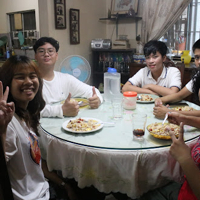
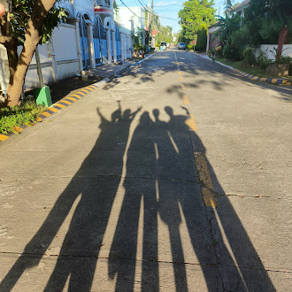

Our Journey

Quarter 1 - Quarter 2
Our journey started when we were tasked to create a project
connected to Sitio Bebe. After a lot of brainstorming and discussions,
we decided to make a YouTube video.
At first, it sounded simple, but as we started working, the struggles quickly showed up. We had a hard time agreeing on the final concept. Some groupmates had different ideas, and it took time to meet halfway.
Scheduling was another big problem — not everyone was available at the same time, so filming took longer than planned. During filming, we dealt with camera problems, missing materials, noise in the background, and needing to repeat scenes over and over again just to get them right. Editing was also stressful, with software crashes and last-minute mistakes we had to fix.
At first, it sounded simple, but as we started working, the struggles quickly showed up. We had a hard time agreeing on the final concept. Some groupmates had different ideas, and it took time to meet halfway.
Scheduling was another big problem — not everyone was available at the same time, so filming took longer than planned. During filming, we dealt with camera problems, missing materials, noise in the background, and needing to repeat scenes over and over again just to get them right. Editing was also stressful, with software crashes and last-minute mistakes we had to fix.

Quarter 3 - Quarter 4
Even after posting the video, the struggles continued.
We needed to learn how to properly title, caption,
and promote the video to get views.
Understanding YouTube Analytics was confusing at first — interpreting data like watch time, reach, audience retention, and click-through rates wasn’t easy.
Sometimes it felt discouraging when the views weren’t high right away. Despite all of these challenges, we pushed through.
We communicated better, gave each other advice, divided tasks more efficiently, a nd learned to adjust whenever problems came up. In the end, the experience made us stronger, taught us new skills in content creation, teamwork, and analytics, and gave us a deeper understanding of what it really takes to run a YouTube channel.
Sometimes it felt discouraging when the views weren’t high right away. Despite all of these challenges, we pushed through.
We communicated better, gave each other advice, divided tasks more efficiently, a nd learned to adjust whenever problems came up. In the end, the experience made us stronger, taught us new skills in content creation, teamwork, and analytics, and gave us a deeper understanding of what it really takes to run a YouTube channel.